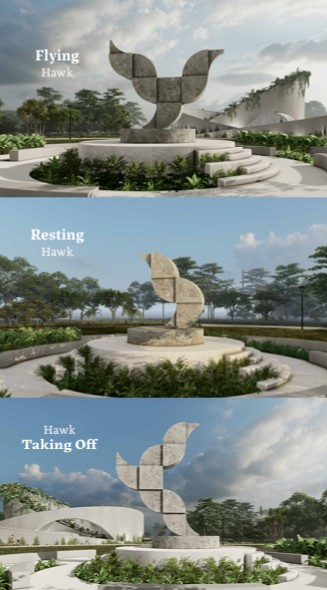
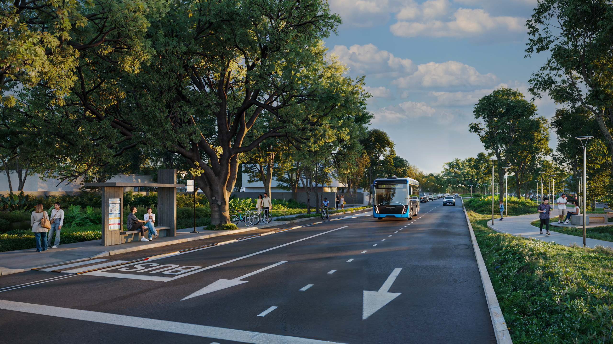
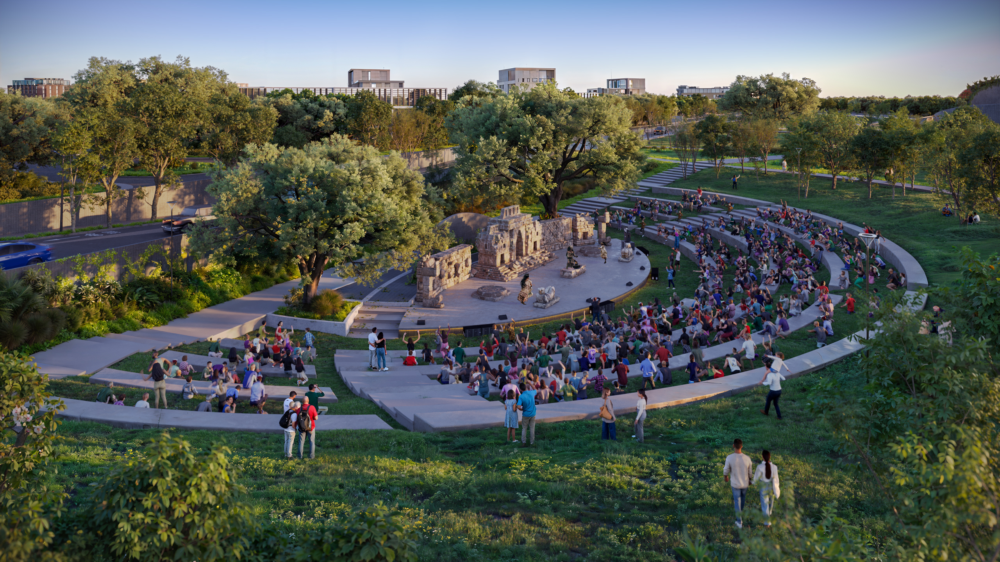
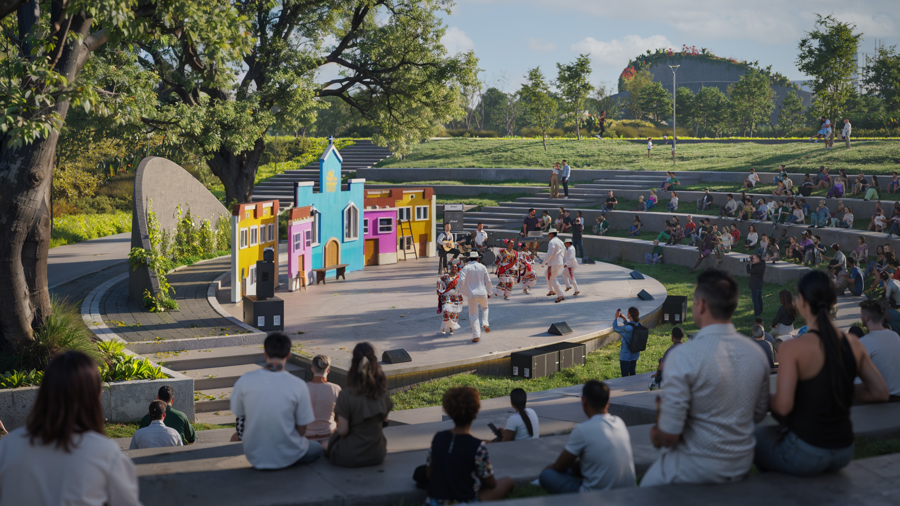
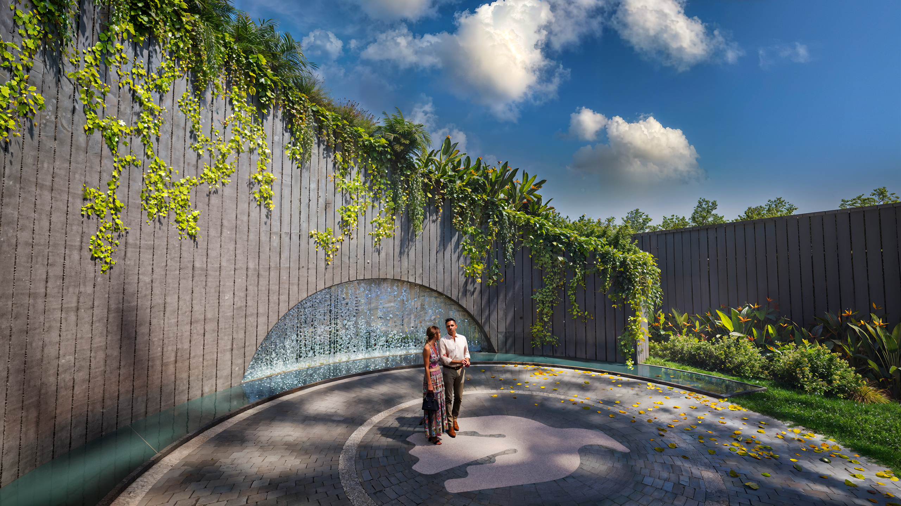
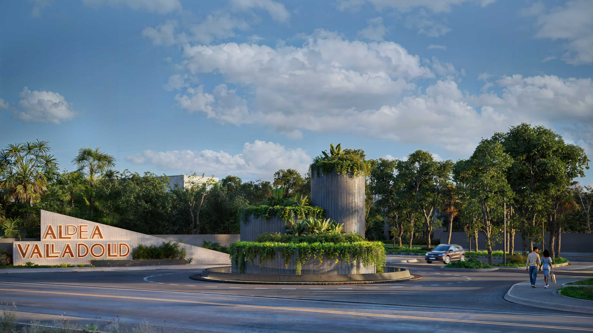

Valladolid · Yucatán · México
Aldea Valladolid sits in one of Mexico's most captivating cities — Valladolid, the "Sultana del Oriente," a jewel of colonial architecture and Maya heritage at the heart of the Yucatán Peninsula. Known for its cobblestone streets, pastel facades, and proximity to some of the world's most extraordinary cenotes and ruins, Valladolid is quietly becoming one of Mexico's most desirable places to live and invest.
The development is anchored by a stunning Parque Lineal — a linear park conceived as the social and cultural heart of the community. Amphitheater, lookout terraces, a pedestrian promenade, and a transit hub create a public space that feels as much a destination as the city itself.
Accessible, authentic, and growing fast — Valladolid is the Yucatán's best-kept secret, and Aldea Valladolid offers the chance to be part of it from the beginning.
Parque Lineal

Parque Lineal — 5 aerial view


Anfiteatro

Amphitheater — aerial view


Miradores



Community Life
A linear park running through the heart of the development — pedestrian promenade, green corridors and open gathering spaces.
Outdoor cultural venue for concerts, events, and community gatherings — part of daily life, not just for special occasions.
Elevated lookout terraces with panoramic views across the park and surrounding landscape — multiple levels and perspectives.
Integrated transit shelter and cycling access — the development is connected to Valladolid's growing sustainable mobility network.
Walk to Valladolid's historic centre — colonial churches, cenotes, local markets, and Yucatecan cuisine at your door.
Cenote Zací in the city centre. Cenote Samulá, X'Kekén, and dozens more within 20 minutes. Swimming in the underground world, every day.

Location
At the geographical heart of the Yucatán Peninsula, Valladolid is the perfect base: close enough to everything, far enough from the crowds. Colonial architecture, Maya heritage, and a thriving cultural scene make it one of Mexico's most liveable cities.
Request Information
Interested in the development, investment potential, or a visit to Valladolid? Send us a message and we'll be in touch with full details and availability.